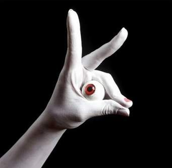
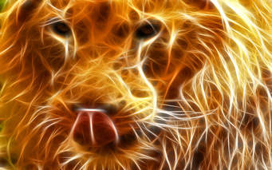
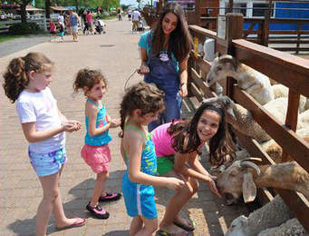

Terms and Conditions

The show centers on the interactions of Henry the Lizard, a green CGI anthropomorphic gecko with purple spots, and an unseen narrator. Each episode centers on a theme relating to the episode's subject matter, such as Henry traveling through prehistory in a time machine in an episode about prehistoric animals. Henry is usually faced with some kind of predicament or work, always relating to the episode's theme, which he resolves by the end of the episode, often learning a lesson of some sort in the process.
- Plot
- Cast and major character
- Episodes
- Merchandise
- External
Each episode is made up of sections in which Henry is featured, video sequences of animals narrated by the off-screen narrator with replies by Henry, and cartoons featuring recurring unnamed cartoon animals. There are also two recurring segments: "Henry's Report" and "The Golden Gecko Awards". Early episodes depicted Henry's Report as a school report, though later episodes changed it to a news report. In either case, the report is comical and almost always wildly inaccurate. The correct information is given by The Narrator after the report.
In Henry's Amazing Golden Gecko Awards, Henry picks three animals relating to the subject of the episode and presents them with awards. Unlike the report, the Golden Gecko Awards are typically more genuine. Henry does most of the narration and often gets annoyed at the Narrator for interrupting him
. Henry's Report occurred in every episode; the only episode that did not have the Golden Gecko Awards was "Underground Animals", probably because of timing issues.
Henry: The show's main protagonist. He is a small green gecko with purple spots and yellow eyes. Henry is portrayed as being enthusiastic, albeit foolish and immature. He is generally depicted as ignorant of the episode's subject matter and typically fails in the endeavours he attempts to undertake. Sometimes, he can prove himself to be quite smart; he is also an inventor. He often identifies lizards seen in the video sequences as his cousins. His favorite food is pizza. Henry is voiced by Eric Meyers.
The Narrator: The Narrator is Henry's co-star, but he is never seen and almost never named. He is depicted as being wise and knowledgeable. In addition to teaching Henry about animals and correcting his special reports, the Narrator acts as a comedic foil to Henry: the show's "straight man", who cuts Henry down for his immaturity and lack of knowledge with some combination of a mature seriousness and a dry sarcasm. The Narrator is voiced by Tom Clarke-Hill.
Crab Tuesday: Henry met Crab Tuesday during a visit to the seashore, and the crab has been Henry's best friend and assistant ever since. Henry names him Tuesday after Robinson Crusoe's "man Friday". Henry can often tell what Tuesday is saying, although he has no voice at all and communicates by snapping his claws. However, in Amazing Animal Hunters, he is heard mumbling "I don't know" to Henry. Crab Tuesday's vocal effects by Frank Welker.
Some merchandise was also released during the activity of the series. An educational computer game was also released with the television show. A board game known as The Really Amazing Animal Game was also sold but was shortly discontinued. In the episode "Extinct Animals" Henry's gift shop displayed several Henry plush toys but it is unknown if they were actually sold in stores or not.
Duck is the common name for a large number of species in the waterfowl family Anatidae, which also includes swans and geese. The ducks are divided among several subfamilies in the family Anatidae; they do not represent a monophyletic group (the group of all descendants of a single common ancestral species) but a form taxon, since swans and geese are not considered ducks. Ducks are mostly aquatic birds, mostly smaller than the swans and geese, and may be found in both fresh water and sea water.
Ducks are sometimes confused with several types of unrelated water birds with similar forms, such as loons or divers, grebes, gallinules, and coots.

A type of abnormal behavior shown in captive animals is self-injurious behavior (SIB). Self-injurious behavior indicates any activity that involves biting, scratching, hitting, hair plucking, or eye poke that may result in injuring oneself.[1] Although its reported incidence is low, self-injurious behavior is observed across a range of primate species, especially when they experience social isolation in infancy.[2] Self-bite involves biting one’s own body—typically the arms, legs, shoulders, or genitals. Threat bite involves biting one’s own body—typically the hand, wrist, or forearm—while staring at the observer, conspecific, or mirror in a threatening manner. Self-hit involves striking oneself on any part of the body. Eye poking is a behavior (widely observed in primates) that presses the knuckle or finger into the orbital space above the eye socket. Hair plucking is a jerking motion applied to one’s own hair with hands or teeth, resulting in its excessive removal.[1]
The proximal causes of self-injurious behavior have been widely studied in captive primates; either social or nonsocial factors can trigger this type of behavior. Social factors include changes in group composition, stress, separation from the group, approaches by or aggression from members of other groups, conspecific male individuals nearby, separation from females, and removal from the group.[2] Social isolation, particularly disruptions of early mother-rearing experiences, is an important risk factor.[1] Studies have suggested that, although mother-reared rhesus macaques still exhibit some self-injurious behaviors,[3] nursery-reared rhesus macaques are much more likely to self-abuse than mother-reared ones.[1] Nonsocial factors include the presence of a small cut, a wound or irritant, cold weather, human contact, and frequent zoo visitors.[2] For example, a study has shown that zoo visitor density positively correlates with the number of gorillas banging on the barrier, and that low zoo visitor density caused gorillas to behave in a more relaxed way. Captive animals often cannot escape the attention and disruption caused by the general public, and the stress resulting from this lack of environmental control may lead to an increased rate of self-injurious behaviors.[4]
On top of self inflicted harm, some animals exhibit harm towards others and internal psychological harm. This can be exhibited in various forma, such as Orca whales, which never have killed a human in the wild, killing two of its own trainers. Psychological tics can also be identified, ranging from swaying to head bobbing to pacing. Continuous inbreeding is also bringing out mental disadvantages, such as crossed eyes and infertility.
Studies suggest that many abnormal captive behaviors, including self-injurious behavior, can be successfully treated by pair housing. Pair housing provides a previously single-housed animal with a same-sex social partner;[5] this method is especially effective with primates, which are widely known to be social animals.[6] Social companionship provided by pair housing encourages social interaction, thus reducing abnormal and anxiety-related behavior in captive animals as well as increasing their locomotion.[5]
Love Animals

www.sharingandcaring.com